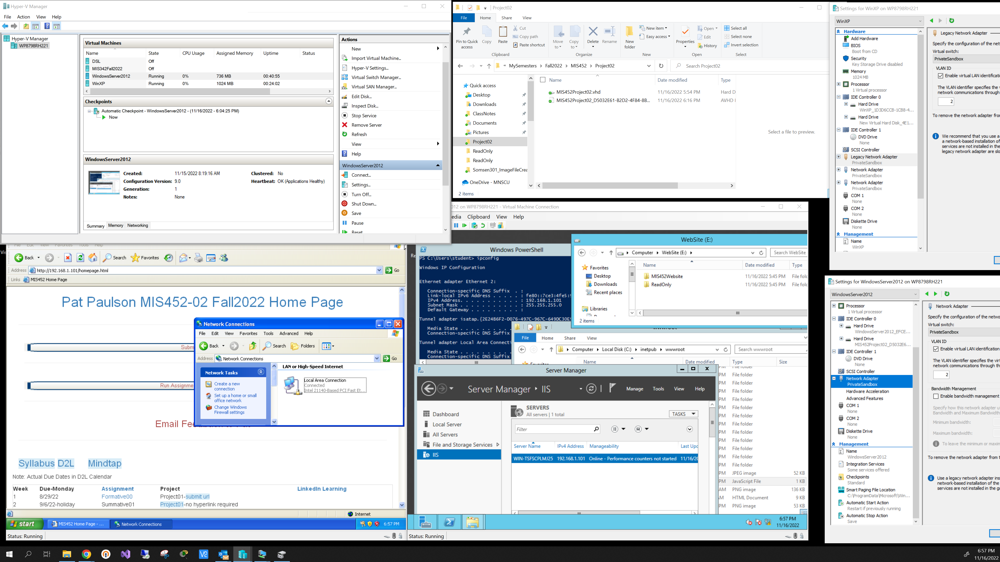
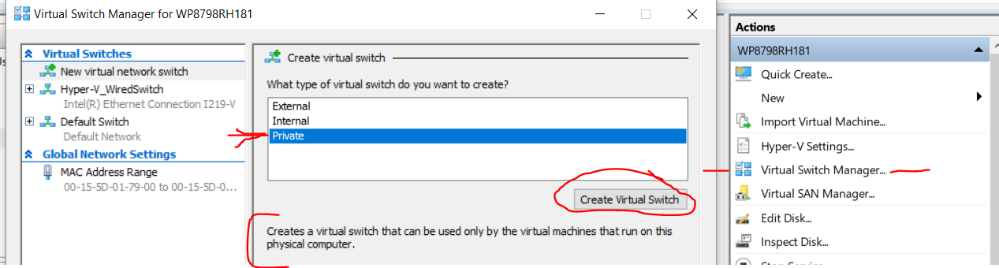

Project 2 Background Info Note: Background information details steps to setup and configure the required virtual machine software, Hyper-V, needed for this project. Do NOT proceed until your Hyper-V software is ready to go!
Information on Hyper-V - good reference to understand capabiiities and uses of Hyper-V virtual machine technology
.iso image files can be obtained from the WSU network at: \\mispgp\VirtualMachineImages, and from varous websites
\\mispgp\VirtualMachineImages
In this part you will connect a browser on the WinXP 'client' vm to a website on the Windows Server 2012 that is running a website on Internet Information Services. These vms are both from Part 1.
Notes:
The screenshot below shows the final product: 
See this article to configure IIS on the Windows 2012 machine. Or Google 'installing IIS on Windows Server 2012' Create and use a .vhd to move a copy of your MIS452 homework website to the IIS website running on the Windows Server 2012 machine. See here. Or Google "how to attach and copy files from a vhd in Windows 10" Make sure the NICs/Network Adapters for both vms are set to use a Private Virtual Switch that you must create in Hyper-V. It may be best to use a 'Legacy Network Adapter' in both machines. Set a Private Lan ID Set static IP addresses for both machines, something like 192.168.1.101 and 192.168.1.102 Use the Disk Management tool to mount the vhd you created to hold the MIS452 website files. Make sure to copy the ReadOnly folder from the course website (T: drive) Note that you will have to modify Internet Explorer browser security settings and add the IP addresses to 'Trusted Sites'
192.168.1.101
192.168.1.102

(100) 1. What is the IP address of the Windows 2012 web server? (100) 2. What is the physical path where the files are stored for the default web server in the Windows 2012 IIS website?
Make a screen shot showing both VMs running. The Windows 2012 server must display the Internet Information Services console for the website. The Windows XP client must have a browser open showing the IP address of the Windows 2012 web server, so that the website home page is displayed.
(50) 4. Comments, thoughts, suggestions for improvement of this project:
Use a web browser to verify that you have published your website to https://classes.winona.edu/... Check that your name, StarID, email, class, semester, section and all of your answers are correct and visible. From the menu choose File>Print... and using "Microsoft Print to PDF" save a copy of this assignment as a .pdf file in your ' ' folder.
(50) 5. Save your file 'WebPage.pdf' to the ' ' folder.
Create one .pdf (portable document format) file from the screen shots that you have taken by following these steps.
(50) 6. Save your file 'ScreenShots.pdf' to the ' ' folder.
Use PDFill to merge the WebPage.pdf file with the ScreenShots.pdf file, and save it as 'Project02_2.pdf' in ' ' folder.
(50) 7. Upload your file 'Project02_2.pdf' to the D2L 'Project02-2' Assignment folder.
Use a browser to view your completed and published website at: https://classes.winona.edu/... Ensure that you have linked this assignment on your home page. Note that your screen shots do not have to be completed to perform this step.